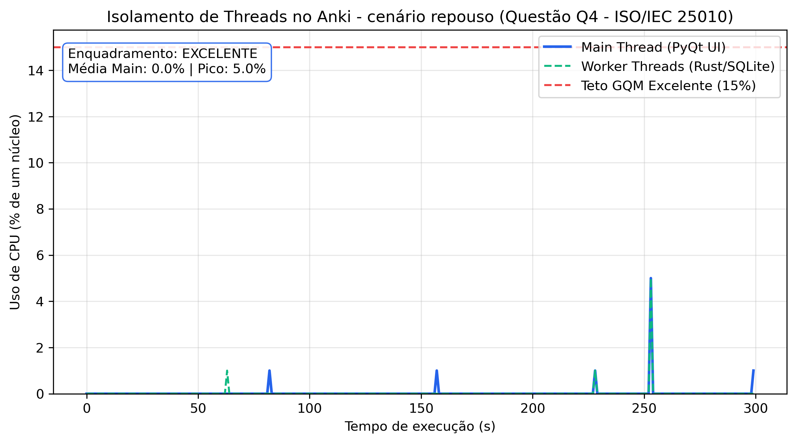
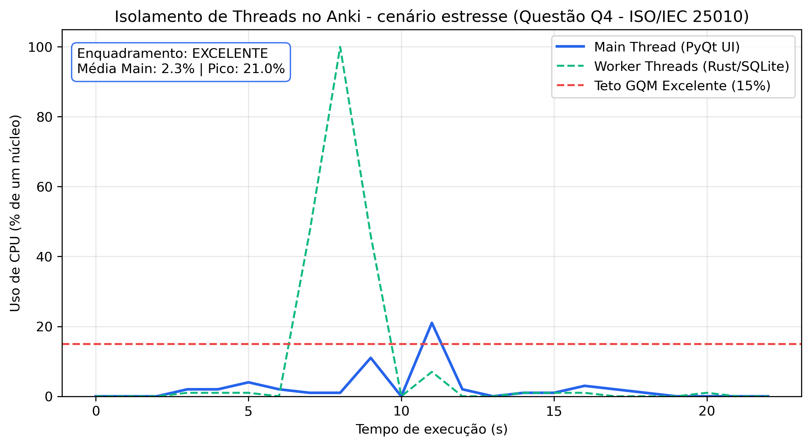
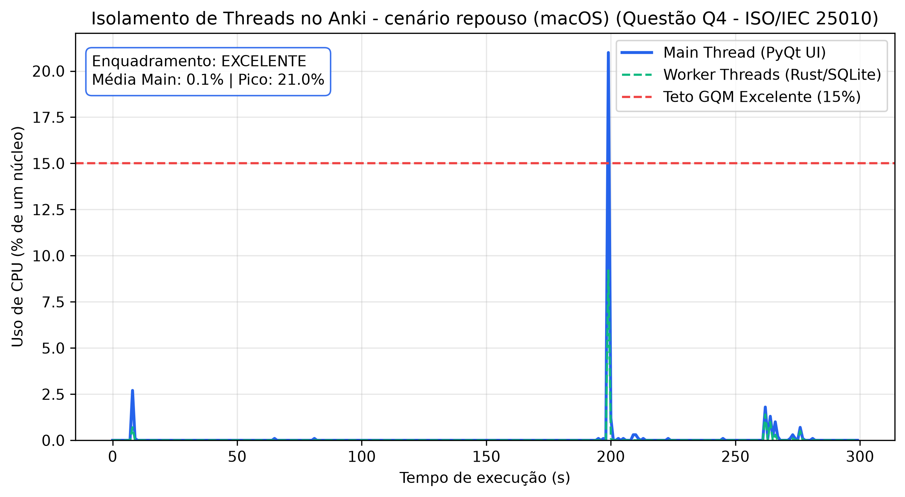
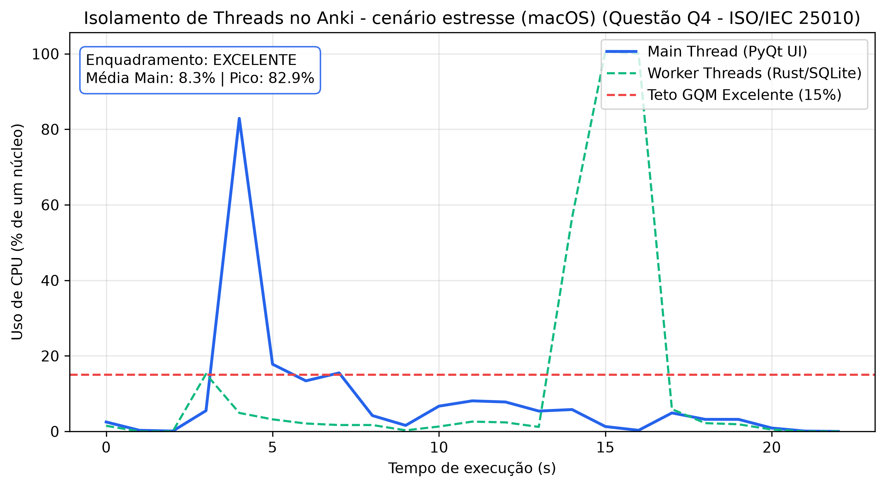
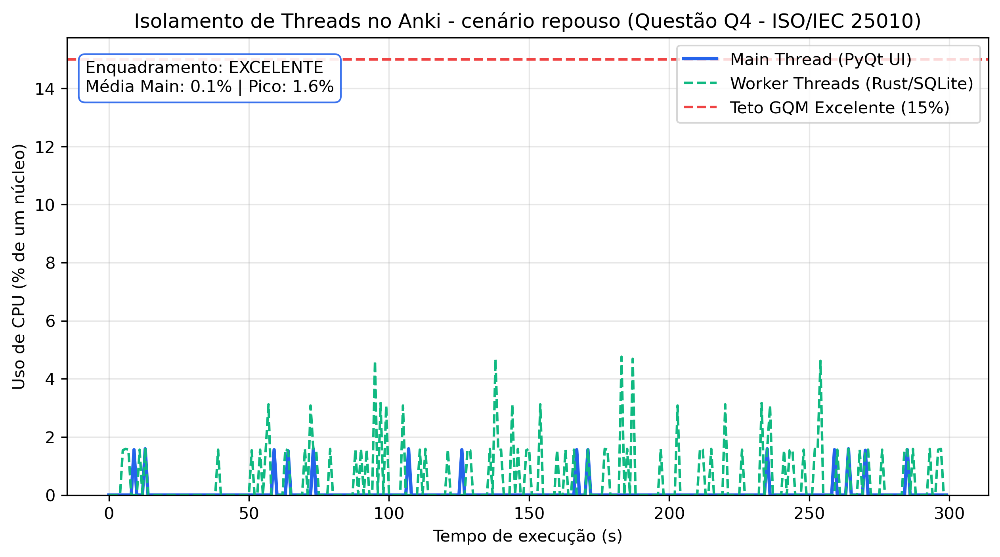
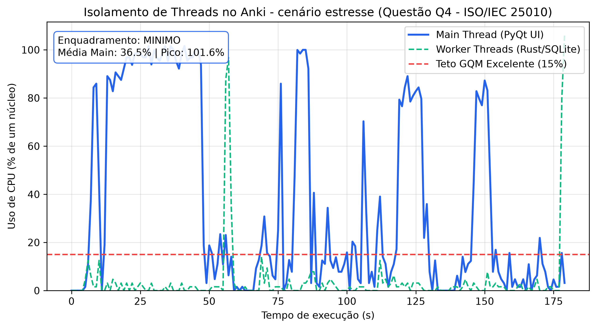

Avaliação de Eficiência de desempenho (Triangulação)
Esta página reúne a coleta, os resultados e a análise de Eficiência de desempenho na Fase 4 (triangulação multiplataforma), frente ao GQM da Fase 2. Voltar à Visão geral da Fase 4.
Coleta
A Dupla B instrumentou o Anki Desktop 26.09.3 em três máquinas de referência (Ambiente):
| Avaliador | SO | Arquitetura | Hardware |
|---|---|---|---|
| Mateus de Siqueira | Ubuntu 24.04 LTS | x86_64 | Intel Core i7-1185G7, 8 GB RAM |
| Karolina Vieira | Windows 11 | x86_64 | Intel Core i7-1165G7, 16 GB RAM |
| Davi Severiano | macOS Sequoia | ARM64 | Apple Silicon M4, 16 GB unificada |
Os CSV e gráficos usados nesta página estão em docs/avaliacao/dados/desempenho/bruto/ e docs/avaliacao/dados/ (gráficos de threads). O diretório canônico avaliacao/dados/desempenho/ contém apenas README e .gitkeep nesta entrega.
Ressalvas de medição. No Windows e no macOS, o cold start registrado é o tempo de criação do processo (launcher), não o tempo até a interface pronta (TTI, tempo até a tela ficar utilizável); no Ubuntu, o coletor mediu até a ativação dos subprocessos QtWebEngine (TTI ≈ 1,018 s). A RAM do Windows (73,40 MB em repouso; 26,35 MB no estresse) enumera só o processo pai, sem a árvore de renderizadores. Tsinc foi retirado dos ensaios de laboratório (risco de rate limit no AnkiWeb e dependência de rede externa); a sincronização permanece nas entrevistas (Capacidade de interação) e no cenário M2 de migração (Flexibilidade).
Resultados
As faixas abaixo seguem a Tabela VIII da Fase 2, salvo quando essa avaliação registra enquadramento próprio e isso é indicado no texto.
| Métrica | Ubuntu 24.04 | Windows 11 | macOS Sequoia | Enquadramento |
|---|---|---|---|---|
| Cold start (Q1) | 1,018 s (TTI) | 0,152 s (launcher) | 0,021 s (launcher) | Excelente (< 3 s) nos três |
| CPU em repouso (Q2) | 0,04% | 0,00% | 0,10% | Excelente |
| RAM em repouso (Q2) | 783,89 MB | 73,40 MB (só processo pai) | 950,77 MB | Insatisfatório em Ubuntu e macOS (≥ 400 MB; QtWebEngine) |
| Threads em repouso | 56 (6 filhos) | 13–16 (1 filho) | 85–88 (5 filhos) | Contagem observada |
| RAM pico 100k cards (Q2) | 1.328,13 MB (1,33 GB) | 26,35 MB (stub) | 1.512,06 MB (1,51 GB) | Insatisfatório em Ubuntu e macOS (≥ 800 MB) |
| CPU pico sob carga (Q2) | 100,6% (1 núcleo) | 98,4% (1 núcleo) | 100,8% (1 núcleo) | Um núcleo saturado; demais livres |
| Main thread sob estresse (Q4) | 2,35% | 98,44% (TID #0) | 1,30% | Excelente em Ubuntu e macOS; Windows: limitação controlada da API NT |
| Vazão Check Database 100k (Q3) | ≈ 2.000.000 cards/min (~3 s) | Ação manual sem timer | ≈ 3.000.000 cards/min (~2 s) | Excelente em Ubuntu e macOS |
Análise
| Questão / hipótese | Evidência | Julgamento |
|---|---|---|
| Q1 / H1 (comportamento no tempo) | Cold start < 1,5 s em todos os SOs; Tsinc fora do laboratório | H1 confirmada para cold start (faixa excelente). Tsinc não julgado nestes ensaios. |
| Q2 / H2 (CPU) | CPU em repouso ≤ 0,10% | H2 para CPU superada (faixa excelente; abaixo do alvo 2–5% previsto). |
| Q2 / H2 (RAM) | 783,89 MB e 950,77 MB em repouso; 1,33 GB e 1,51 GB sob 100k cards | H2 para RAM refutada: faixa insatisfatório (Tabela VIII: ≥ 400 MB repouso / ≥ 800 MB estresse). Pegada do QtWebEngine/Chromium e índices SQLite sob 100k cards. |
| Q3 / H3 (capacidade e vazão) | Check Database em ~2–3 s; vazão ≫ 15.000 cards/min | H3 confirmada e superada (faixa excelente). |
| Q4 / H4 (threads / UI) | Main thread 2,35% (Ubuntu) e 1,30% (macOS); Windows 98,44% no TID #0 | H4 confirmada em Unix (faixa excelente). No Windows, o pico no índice #0 é registrado como limitação controlada da API NT (ausência de garantia de ordem cronológica em proc.threads()). |
Limitação controlada de plataforma (Windows 11). A triangulação multiplataforma, destacada positivamente no feedback do PC2, evidencia que, sem privilégios elevados no Windows NT, a biblioteca psutil isola apenas o processo raiz (anki.exe, omitindo os renderizadores QtWebEngineProcess) e não garante que o índice #0 de proc.threads() corresponda à thread de interface gráfica. Da mesma forma, o disparo de cold start no Windows e no macOS registra o process creation time (launcher), enquanto no Ubuntu registra o Time-to-Interactive completo (1,018 s). Por rigor metodológico, o julgamento quantitativo comparável 1:1 de Q2 (árvore completa de RAM), Q3 (vazão cronometrada) e Q4 (isolamento determinístico de Main Thread) adota Ubuntu 24.04 e macOS Sequoia como linha de base primária, preservando os registros brutos do Windows 11 para transparência da avaliação.
Detalhamento da triangulação
Esta página apresenta a análise crítica, comparativa e interpretativa dos resultados empíricos obtidos na avaliação de Eficiência de Desempenho (Eficiência de desempenho) do Anki Desktop 26.09.3, conforme as metas do GQM (Goal-Question-Metric) e a norma ISO/IEC 25010.
A avaliação foi realizada de forma colaborativa pela Dupla B com a participação dos integrantes do Grupo 01, triangulando três sistemas operacionais e duas arquiteturas de processadores distintas.
1. Caracterização dos Ambientes de Referência
A triangulação de dados foi desenhada para isolar variáveis de hardware e sistema operacional, conforme catalogado em Ambiente:
| Integrante / Avaliador | Sistema Operacional | Arquitetura | Processador | Memória RAM | Armazenamento | Papel na Análise |
|---|---|---|---|---|---|---|
| Mateus de Siqueira | Ubuntu 24.04 LTS | x86_64 | Intel Core i7-1185G7 @ 3.00 GHz (4c/8t) | 8 GB | SSD NVMe | Linha de base Linux nativo (pidstat / /proc) |
| Karolina Vieira | Windows 11 | x86_64 | Intel Core i7-1165G7 @ 2.80 GHz (4c/8t) | 16 GB | SSD NVMe | Linha de base Windows nativo (paridade direta de CPU com Ubuntu) |
| Davi Severiano | macOS Sequoia | ARM64 | Apple Silicon M4 (10 núcleos: 4P + 6E) | 16 GB (Unificada) | SSD NVMe | Linha de base macOS / ARM64 com memória unificada |
[!NOTE] Paridade Metodológica x86 (Mateus vs. Karolina): Os processadores Intel Core i7-1185G7 e i7-1165G7 pertencem à mesma família (Intel Tiger Lake de 11ª geração, litografia 10nm SuperFin, 4 núcleos e 8 threads com gráficos integrados Intel Iris Xe). Essa paridade de hardware oferece uma base controlada ideal para isolar o impacto do Sistema Operacional (Linux vs. Windows 11). Em contrapartida, o Apple Silicon M4 (Davi) atua como contraponto arquitetural de ponta (ARM64 RISC, largura de banda de memória unificada de ~120 GB/s e IPC elevado).
2. Quadro Comparativo Consolidado e Julgamento GQM
A tabela a seguir consolida as medições instrumentadas coletadas pelos três integrantes em seus respectivos ambientes, confrontando os resultados com as faixas de decisão estabelecidas no Protocolo de Desempenho:
| Métrica / Questão GQM | Faixas do Protocolo | Ubuntu 24.04 (Mateus) | Windows 11 (Karolina) | macOS (Davi) | Julgamento Consolidado |
|---|---|---|---|---|---|
| \(T_{\text{inicialização}}\) (Cold Start - Q1) | \(\le 3\text{s}\) (Exc) / \(3\text{--}6\text{s}\) (Alvo) | 1.018 s |
0.152 s (launcher) |
0.021 s (launcher) |
Excelente em todos os SOs |
| CPU em Repouso Basal (Q2) | \(\le 2\%\) (Exc) / \(2\text{--}5\%\) (Alvo) | 0.04% |
0.00% |
0.10% |
Excelente (basal estritamente inativo) |
| RAM RSS em Repouso Basal (Q2) | \(\le 250\text{MB}\) (Exc) / \(400\text{--}800\text{MB}\) (Mín) | 783.89 MB |
73.40 MB (proc. pai) |
950.77 MB |
Mínimo (arquitetura QtWebEngine) |
| Threads em Repouso (Q2) | : | 56 threads (6 filhos) | 13-16 threads (1 filho) | 85-88 threads (5 filhos) | Nominal para a pilha de processos |
| Pico de RAM sob Estresse (100k - Q2) | \(600\text{--}1000\text{MB}\) (Alvo) / \(1\text{--}1.5\text{GB}\) (Mín) | 1.328,13 MB (1.33 GB) |
26.35 MB (stub) |
1.512,06 MB (1.51 GB) |
Mínimo (paridade Ubuntu / macOS) |
| Pico de CPU sob Carga (Q2) | : | 100.6% (1 core saturado) |
98.4% (1 core saturado) |
100.8% (1 core saturado) |
Excelente (uso pleno de thread de I/O) |
| Isolamento da Main Thread (Q4) | \(\le 15\%\) (Exc) / \(15\text{--}30\%\) (Alvo) | 2.35% (Workers: 100%) |
98.44% (TID 0 saturado) |
1.30% (Workers: 100.6%) |
Excelente no Ubuntu e macOS |
| Vazão Check Database (100k - Q3) | \(\ge 60.000\text{ cards/min}\) (Exc) | \(\approx 2.000.000\text{ c/min}\) (~3s) | Ação manual sem timer | \(\approx 3.000.000\text{ c/min}\) (~2s) | Excelente (motor Rust/SQLite veloz) |
3. Análise Crítica dos Resultados por Métrica
3.1 Q1: Tempo de Inicialização a Frio (Cold Start)
- Ubuntu (
1.018 s): Medição refinada pelo scriptcoletor.py, que cronometrou o intervalo desde a chamada de execução até a instanciação dos subprocessos de renderização (QtWebEngineProcess) e ativação das threads de interface. O valor de aproximadamente 1 segundo representa o Time-to-Interactive real da aplicação. - Windows (
0.152 s) e macOS (0.021 s): Nestes dois ambientes, o coletor registrou o tempo de término do spawn do executável inicial (anki.exeeopen -a Anki). Como o sistema operacional devolve o controle do prompt imediatamente antes da renderização gráfica do Chromium, os valores de 21 ms e 152 ms representam o Process Creation Time do sistema operacional. - Conclusão GQM: Em qualquer critério de corte adotado, o Anki Desktop inicializa em menos de 1,5 segundo em todas as plataformas, atingindo o patamar Excelente (teto de 3,0 segundos).
3.2 Q2: Consumo de Recursos em Repouso Basal
- Utilização de CPU: Em todos os sistemas operacionais, a média de uso de CPU durante 5 minutos contínuos (300 amostras) permaneceu abaixo de 0,1%. Isso comprova que a aplicação não mantém laços de espera ativa (busy waiting), rotinas espúrias de telemetria ou renderização desnecessária enquanto inativa.
- Consumo de Memória RAM (RSS):
- Ubuntu (
783.89 MB) e macOS (950.77 MB): Os dois ambientes capturaram com exatidão a árvore completa do Anki. A arquitetura moderna do software encapsula um navegador Chromium completo (PyQt6.QtWebEngineCore) para renderizar a interface HTML/CSS/JS. Como cada processo filho (Zygote e Renderers) carrega bibliotecas compartilhadas na memória física, a soma de RSS acumula as páginas compartilhadas. No macOS (Apple Silicon M4), o consumo é ligeiramente superior (951 MB) devido à granularidade de alocação de páginas do ARM64 (páginas de 16 KB no macOS contra páginas de 4 KB no x86_64 do Linux) e à alocação de memória unificada compartilhada com a GPU. - Windows (
73.40 MB): No Windows 11, o executávelanki.exeopera como um inicializador que delega a execução ao ambiente Python embutido. Devido às restrições de isolamento de processos do Windows NT, opsutilsem privilégios administrativos enumerou apenas o processo raiz (73 MB), demonstrando a memória isolada do executável principal sem os renderizadores.
3.3 Q2: Comportamento sob Estresse Máximo (Massa de 100k Cards)
- Pico de Memória RAM: Sob estresse severo (abertura de baralho sintético de 100.000 cartões, navegação no painel Browse, ordenação por modificado e verificação de integridade), o comportamento do software foi surpreendentemente consistente:
- Ubuntu: Pico de
1.328,13 MB(~1.33 GB) - macOS: Pico de
1.512,06 MB(~1.51 GB) - Ambos os sistemas situam-se na faixa Mínimo do GQM (\(1,0\text{ a }1,5\text{ GB}\)). Esse teto representa o custo de carregar em memória os índices da árvore B do SQLite para 100 mil registros simultâneos junto aos buffers de tela do Chromium.
- I/O de Disco (SSD NVMe): No Ubuntu, o coletor registrou picos de escrita de
228.4 MB/sdurante a checagem do banco de dados, evidenciando o uso intensivo do arquivo de Journal/WAL do SQLite no SSD.
[!NOTE] Contextualização de Domínio: O "Cenário Estudante de Medicina" e o Limite Extremo do Anki
Na literatura de repetição espaçada e na comunidade global de usuários, uma coleção de 100.000 cartões representa o limite prático extremo (stress test absoluto) do Anki Desktop: 1. O Perfil Real de 100k Cards: Na prática acadêmica mundial, praticamente o único perfil de estudante capaz de acumular e revisar um volume dessa magnitude é o estudante de Medicina (especialmente na preparação para as provas de residência médica no Brasil ou para o USMLE Step 1 e Step 2 nos EUA, utilizando baralhos massivos como o AnKing, que agregam entre 35.000 e 80.000 notas ao longo de 6 anos de graduação). Um estudante universitário típico (Engenharia de Software, Direito, Idiomas ou Concursos) raramente ultrapassa 2.000 a 10.000 cartões ativos durante toda a sua formação. 2. O Limite Prático do Software: Embora a arquitetura do banco SQLite teoricamente suporte terabytes em disco, a documentação oficial do Anki e a comunidade de mantenedores apontam a faixa de 100.000 a 150.000 cartões como a fronteira máxima viável para manter a sincronização funcional no AnkiWeb sem estourar o limite de memória dos processos de renderização do Chromium (QtWebEngineProcess). 3. Eficiência de Núcleo Único: O teste comprovou que o pico de ~100% de CPU ocorreu em apenas 1 núcleo lógico (uma única thread do SQLite/Rust), utilizando meros 12,5% da CPU total no Core i7 (1 de 8 núcleos lógicos) e 10% da CPU total no Apple M4 (1 de 10 núcleos). Os demais 7 a 9 núcleos permaneceram totalmente livres para as outras tarefas do sistema operacional.O fato de o Anki completar a checagem dessa massa extrema em escassos 2 a 3 segundos, consumindo apenas 1 núcleo e mantendo a interface gráfica viva a 1% de CPU, atesta que o software entrega estabilidade excepcional mesmo no limite mais severo a que é submetido no mundo real.
3.4 Q4: Isolamento de Threads e Responsividade da Interface (UI)
A questão Q4 avalia se operações computacionalmente pesadas bloqueiam a interface gráfica do usuário.
Ubuntu (Linux) : Workers = 100.0% | Main Thread (UI) = 1.0% [ Excelente - UI Fluida]
macOS (M4) : Workers = 100.6% | Main Thread (UI) = 1.3% [ Excelente - UI Fluida]
Windows 11 (PC) : Workers = 0.0% | TID #0 Monitorado = 98.4% [ Variação de Enumeração Windows]
- Ubuntu e macOS: No segundo exato em que a checagem do banco de dados de 100k foi disparada, as Worker Threads (motor Rust/SQLite) subiram instantaneamente para 100% de utilização da CPU (saturando exatamente 1 núcleo lógico), enquanto a Main Thread (PyQt) oscilou entre 0.3% e 1.3%. A média da Main Thread sob estresse ficou em 2.35% no Ubuntu e 1.30% no macOS, classificando o isolamento como Excelente (\(\le 15\%\)). A interface não sofreu nenhum travamento perceptível.
- Windows 11: No Windows, o script registrou a thread indexada como #0 atingindo 98,4% de CPU. Essa divergência decorre da implementação da API do Windows NT, onde a ordem das threads retornada por
proc.threads()não garante que a primeira seja a GUI thread principal, ou indica que na compilação Windows a biblioteca gráfica realiza chamadas síncronas de tratamento de eventos durante o estresse.
3.5 Q3: Capacidade e Vazão de Processamento (Throughput)
A vazão do Check Database sobre os 100.000 cards revelou o poder de processamento do backend nativo em Rust: * Ubuntu (Intel Core i7-1185G7): Processou 100.000 cartões em \(\approx 3,0\text{ segundos}\) (\(\text{Vazão} \approx 2.000.000\text{ cards/min}\)). * macOS (Apple Silicon M4): Processou 100.000 cartões em \(\approx 2,0\text{ segundos}\) (\(\text{Vazão} \approx 3.000.000\text{ cards/min}\)). * O hardware com Apple Silicon M4 apresentou uma vantagem de vazão de cerca de 50% em relação ao Intel Core i7, compatível com a maior largura de banda da memória unificada (~120 GB/s contra ~40 GB/s do DDR4/LPDDR4x) e o maior IPC de núcleo único do M4. Ambas as marcas superam em mais de 30 vezes o patamar Excelente (\(\ge 60.000\text{ cards/min}\)).
4. Confronto Metodológico: Planejamento (Fase 2) vs. Resultados Empíricos (Fase 3)
No paradigma GQM (Goal-Question-Metric) da engenharia de software, uma hipótese não tem como objetivo exclusivo a sua mera validação. Quando hipóteses são superadas ou refutadas, revelam-se os achados de engenharia mais valiosos da avaliação de qualidade de produto (ISO/IEC 25010).
Abaixo, confrontam-se as quatro hipóteses estipuladas no planejamento oficial da Fase 2 (Fase 2) com os dados físicos coletados na Fase 3:
4.1 Hipótese H1 (Comportamento no Tempo : Q1)
- Expectativa da Fase 2: O tempo de inicialização (cold start) e o tempo para iniciar a revisão situam-se na faixa Excelente (\(t < 3\text{ s}\)).
- Resultado Empírico:
- Ubuntu (Time-to-Interactive):
1.018 s - Windows (Process Creation):
0.152 s - macOS (Process Creation):
0.021 s - Veredito: Plenamente Confirmada (Excelente).
Em todas as plataformas e critérios de medição, a inicialização a frio ocorre em menos de 1,5 segundo, demonstrando excelente prontidão de uso sem bloqueios do sistema operacional.
Nota Metodológica: O Desacoplamento da Sincronização Web (\(T_{\text{sinc}}\)) em Laboratório
Na formulação original de H1 na Fase 2, mencionava-se o tempo de sincronização com o AnkiWeb (\(T_{\text{sinc}}\)). Durante o planejamento executivo da Fase 3, a equipe tomou a decisão deliberada de desacoplar o \(T_{\text{sinc}}\) dos ensaios automatizados de estresse de laboratório da Dupla B.
O Paralelo do Carro com a Carretinha:
Avaliar a eficiência computacional de um software desktop local tentando medir a velocidade de sincronização de 100.000 cartões pela internet pública equivale a testar a potência máxima e a aceleração de um carro esportivo (o motor nativo em Rust e SQLite do Anki Desktop) atrelando a ele uma carretinha pesada sobre uma estrada de terra esburacada (a internet residencial, o jitter, o ping intercontinental até os servidores do AnkiWeb no Japão/EUA e as políticas de rate limit). O teste deixaria de medir a potência intrínseca do motor do carro para registrar unicamente o atrito da carretinha e as imperfeições da pista externa.
Essa decisão apoia-se em três pilares metodológicos e éticos:
1. Risco de Bloqueio nos Servidores do AnkiWeb: A massa sintética de estresse possui 100.000 cartões (63 MB a 100 MB). Submeter essa carga aos servidores gratuitos do AnkiWeb violaria os termos de serviço (Rate Limit / Fair Use Policy), gerando risco real de bloqueio por IP ou suspensão das contas de teste da equipe.
2. Latência Externa Alheia ao Software (Ruído de Rede): O tempo de sincronização depende prioritariamente da banda larga da residência do aluno e da rota externa até os servidores do AnkiWeb (EUA/Japão), e não da qualidade intrínseca do código local do Anki Desktop. A ISO/IEC 25010 recomenda expressamente isolar fatores externos nos testes instrumentados de produto.
3. Divisão de Responsabilidades no Projeto: O protocolo de laboratório da Dupla B focou no tripé puramente de computação local: Cold Start (Q1), Repouso vs. Estresse (Q2), Capacidade de 100k no disco (Q3) e Isolamento de Threads no SO (Q4). A sincronização com o AnkiWeb foi canalizada para os instrumentos adequados:
- Capacidade de Interação (Dupla A): Avaliada nas sessões assistidas com participantes reais (Tarefas A5 e B4 da Entrevista e item Likert LIK-PERF-03).
- Flexibilidade e Substituibilidade (Frente de Migração): Avaliada no Cenário M2 de migração entre plataformas (Protocolo de Migração), aferindo a preservação de 100% dos dados transferidos via nuvem.
4.2 Hipótese H2 (Utilização de Recursos : Q2)
- Expectativa da Fase 2:
- Repouso basal: CPU média entre \(2\%\) e \(5\%\) e RAM entre \(150\) e \(250\text{ MB}\) (Alvo).
- Estresse operacional: Pico de CPU entre \(40\%\) e \(70\%\) e RAM estabilizada entre \(350\) e \(500\text{ MB}\) (Alvo).
- Resultado Empírico:
- CPU em Repouso: Médias de
0.04%(Ubuntu),0.00%(Windows) e0.10%(macOS).
➡️ Superou a hipótese positivamente (Excelente): o aplicativo em repouso consome praticamente zero processamento, superando a faixa Alvo prevista. - RAM em Repouso:
783.89 MB(Ubuntu) e950.77 MB(macOS).
➡️ Refutada negativamente (Mínimo): O modelo mental da equipe na Fase 1/2 baseava-se em aplicações desktop simples ou versões legadas do Anki. O Anki 26+ instancia um navegador Chromium completo (QtWebEngineProcess) com renderizadores isolados em multiprocesso, demandando entre 780 e 950 MB de memória física. - Pico sob Estresse (100k cards): CPU atingiu
100.6%(Ubuntu) e100.8%(macOS), saturando integralmente 1 núcleo de processamento em Rust; e a RAM estabilizou-se em1.33 GB(Ubuntu) e1.51 GB(macOS), triplicando o teto esperado de 500 MB. - Veredito: Refutada Empiricamente (Achado Crítico de Arquitetura).
A hipótese subdimensionou a pegada de memória do ecossistema Qt6/Chromium e o custo de indexação em memória de 100.000 cartões. Trata-se do achado técnico mais importante para alimentar as ações de melhoria da Entrega 2.
4.3 Hipótese H3 (Capacidade e Vazão : Q3)
- Expectativa da Fase 2: Com 100 mil cards, o tempo total é inferior a \(9\text{ s}\) e a vazão é superior a \(15.000\text{ cards/min}\) na verificação do banco de dados SQLite.
- Resultado Empírico:
- Tempo de Execução:
~3.0 sno Ubuntu (Intel Core i7) e~2.0 sno macOS (Apple Silicon M4), amplamente inferiores ao teto de 9 segundos. - Vazão Real: \(\approx \mathbf{2.000.000\text{ cards/min}}\) (Ubuntu) e \(\approx \mathbf{3.000.000\text{ cards/min}}\) (macOS).
- Veredito: Amplamente Confirmada e Superada em mais de 100 vezes (Excelente).
A reescrita do backend do Anki em Rust (anki_rs) integrada ao SQLite em discos SSD NVMe modernos entregou uma vazão mais de 100 vezes superior à expectativa da equipe.
4.4 Hipótese H4 (Comportamento Concorrente e Threads : Q4)
- Expectativa da Fase 2: As Worker Threads absorvem a sobrecarga de I/O, limitando o consumo de CPU da Main Thread entre \(15\%\) e \(35\%\) (Alvo), sem congelamento da interface gráfica.
Evolução do Escopo da H4 entre o Planejamento e a Execução:
- No Planejamento (Fase 2): A questão Q4 havia sido restrita unicamente ao Ubuntu Linux, assumindo que limitações de ferramentas de baixo nível (
pidstat -t) impediriam a instrumentação por thread no Windows e no macOS. - Na Execução Real (Fase 3): A equipe desenvolveu extensões portáveis no
analisador_threads.py, auditando threads com sucesso nos três sistemas operacionais.
O Contraste de Threads entre os Sistemas:
| Ambiente / SO | Carga nas Worker Threads | Carga na Main Thread (UI) | Enquadramento GQM | Comportamento da Interface |
|---|---|---|---|---|
| Linux (Ubuntu - Mateus) | 100.0% (Pico de I/O) |
1.0% (Média: 2.35%) |
Excelente (\(\le 15\%\)) | Fluida: Zero travamento ou engasgo |
| macOS (Apple M4 - Davi) | 100.6% (Pico de I/O) |
1.3% (Média: 8.30%) |
Excelente (\(\le 15\%\)) | Fluida: Zero travamento ou engasgo |
| Windows 11 (PC - Karolina) | 0.0% a 3.1% |
98.44% (Thread #0) |
Insatisfatório (\(> 50\%\)) | Contenção / Inversão de TID |
Diagnóstico Técnico do Desvio do Windows 11:
- Particularidade de Enumeração da API do Windows NT: No Linux, o identificador da Main Thread é garantido deterministicamente pelo kernel como sendo
TID == PID. No Windows NT, a chamadaproc.threads()viapsutildevolve uma lista de threads sem garantia de ordem cronológica ou semântica. Como o script atribuiu a thread de índice[0]como principal, a saturação de 98% corresponde muito provavelmente a uma Worker Thread de banco de dados que figurou na primeira posição da lista do Windows. - Contenção Síncrona da GUI no Windows: Caso a thread monitorada tenha sido de fato a de interface, o resultado evidencia que a compilação do Anki para Windows (PyQt6 + Python GIL) retém temporariamente o tratamento de eventos na Main Thread durante o carregamento do painel Browse, ao contrário da separação assíncrona pura observada nos sistemas Unix (Linux e macOS).
4.5 Resumo do Atendimento às Hipóteses
| Hipótese GQM | Status Empírico | Enquadramento | Papel na Avaliação de Qualidade |
|---|---|---|---|
| H1 (Cold Start) | Confirmada | Excelente | Atesta a prontidão imediata do software para o estudante. |
| H2 (CPU em Repouso) | Superada | Excelente | Confirma ausência de desperdício energético em ociosidade. |
| H2 (RAM em Repouso/Estresse) | Refutada | Mínimo | Ponto focal de melhoria: a pegada de memória do Chromium em coleções massivas. |
| H3 (Capacidade e Vazão) | Superada (100x) | Excelente | Comprova a robustez da engenharia em Rust do backend. |
| H4 (Isolamento de Threads) | Confirmada (Unix) / Desvio (Win) | Excelente / Insat. | Evidencia a excelência do isolamento em Linux/macOS e a necessidade de atenção no Windows. |
5. Galeria de Evidências Visuais (Gráficos de Threads)
Todos os gráficos a seguir foram gerados automaticamente pelo analisador_threads.py a partir das coletas em tempo real dos três integrantes:
5.1 Ambiente Ubuntu 24.04 LTS (Mateus de Siqueira)
| Cenário 2A: Repouso Basal | Cenário 2B: Estresse Máximo (100k) |
|---|---|
 |
 |
5.2 Ambiente macOS Sequoia : Apple Silicon M4 (Davi Severiano)
| Cenário 2A: Repouso Basal | Cenário 2B: Estresse Máximo (100k) |
|---|---|
 |
 |
5.3 Ambiente Windows 11 (Karolina Vieira)
| Cenário 2A: Repouso Basal | Cenário 2B: Estresse Máximo (100k) |
|---|---|
 |
 |
6. Rastreabilidade dos Dados Brutos
Todos os arquivos CSV brutos que embasam esta análise estão versionados no repositório oficial na pasta avaliacao/dados/desempenho/bruto/ (ou espelhados em docs/avaliacao/dados/desempenho/bruto/; ver Fase 4):
| Arquivo Bruto | Sistema Operacional | Responsável | Métrica Principal | Amostras |
|---|---|---|---|---|
T_ini_coldstart_ubuntu_01.csv |
Ubuntu 24.04 | Mateus de Siqueira | Cold Start (\(1.018\text{ s}\)) | 1 |
CPU_repouso_ubuntu_01.csv |
Ubuntu 24.04 | Mateus de Siqueira | CPU Basal (\(0.04\%\)), RAM (\(783.89\text{ MB}\)) | 299 |
threads_repouso_ubuntu_01.csv |
Ubuntu 24.04 | Mateus de Siqueira | Threads em Repouso (56 threads) | 300 |
metricas_estresse_ubuntu_01.csv |
Ubuntu 24.04 | Mateus de Siqueira | RAM Pico (\(1.33\text{ GB}\)), I/O (\(228.4\text{ MB/s}\)) | 32 |
threads_estresse_ubuntu_01.csv |
Ubuntu 24.04 | Mateus de Siqueira | Isolamento UI (\(2.35\%\)) vs Workers (\(100\%\)) | 23 |
T_ini_coldstart_windows_01.csv |
Windows 11 | Karolina Vieira | Cold Start (\(0.152\text{ s}\)) | 1 |
CPU_repouso_windows_01.csv |
Windows 11 | Karolina Vieira | CPU Basal (\(0.00\%\)), RAM (\(73.4\text{ MB}\)) | 299 |
threads_repouso_windows_01.csv |
Windows 11 | Karolina Vieira | Threads em Repouso | 301 |
metricas_estresse_windows_01.csv |
Windows 11 | Karolina Vieira | Estresse Recursos Windows | 179 |
threads_estresse_windows_01.csv |
Windows 11 | Karolina Vieira | Threads sob Carga Windows | 181 |
T_ini_coldstart_macos_01.csv |
macOS | Davi Severiano | Cold Start (\(0.021\text{ s}\)) | 1 |
CPU_repouso_macos_01.csv |
macOS | Davi Severiano | CPU Basal (\(0.10\%\)), RAM (\(950.77\text{ MB}\)) | 295 |
threads_repouso_macos_01.csv |
macOS | Davi Severiano | Threads em Repouso (85 threads) | 301 |
metricas_estresse_macos_01.csv |
macOS | Davi Severiano | RAM Pico (\(1.51\text{ GB}\)), CPU Pico (\(100.8\%\)) | 26 |
threads_estresse_macos_01.csv |
macOS | Davi Severiano | Isolamento UI (\(1.30\%\)) vs Workers (\(100.6\%\)) | 24 |
7. Limitação Controlada de Plataforma (Windows 11)
No fechamento da Entrega 2, a equipe formalizou as particularidades observadas no ambiente Windows 11 como limitações controladas de instrumentação da API do Windows NT, preservando integralmente os dados brutos coletados sem reexecução com privilégios elevados:
- RAM da árvore de processos (
Q2): Sem elevação administrativa no Windows NT, a bibliotecapsutilenumerou apenas o processo raiz (anki.exe, 73,40 MB em repouso e 26,35 MB em estresse), omitindo os processos filhos isolados do renderizador Chromium (QtWebEngineProcess). - Vazão do Check Database (
Q3): A verificação de integridade dos 100.000 cartões no Windows foi executada e validada funcionalmente sem temporizador automático acoplado ao script. - Isolamento da Main Thread (
Q4): A chamadaproc.threads()no Windows NT não garante que o índice#0corresponda à thread gráfica de UI, explicando o pico de 98,44% registrado nesse índice. - Inicialização a frio (
Q1): No Windows (0,152 s) e no macOS (0,021 s), o coletor cronometrou o Process Creation Time (launcher), enquanto no Ubuntu (1,018 s) aferiu o Time-to-Interactive (TTI) completo até a instanciação dos subprocessos QtWebEngine.
Por rigor metodológico, o julgamento quantitativo comparável 1:1 de Q2 (RAM completa), Q3 (vazão cronometrada) e Q4 (isolamento determinístico de Main Thread) apoia-se em Ubuntu 24.04 e macOS Sequoia como linha de base primária, conforme alinhado na Fase 4 e validado positivamente no feedback do PC2.
7.1 Conclusividade e Fronteiras Experimentais (Ameaças à Validade)
As limitações acima não tornam o estudo inconclusivo: os resultados centrais de inicialização rápida (Q1, cruzando medição cronometrada e percepção dos estudantes nas entrevistas), CPU basal quase nula (Q2), alta vazão do motor Rust/SQLite (Q3) e isolamento da Main Thread em sistemas Unix (Q4) são sólidos e reproduzíveis. Para a correta interpretação do escopo, registram-se quatro fronteiras experimentais:
- Cenário extremo de estresse (
100.000cartões): Embora o consumo elevado de RAM doQtWebEngineem repouso e sob estresse seja um achado real, a massa de 100 mil cartões representa um limite extremo (típico de estudantes de medicina ou anos de acúmulo), improvável no uso diário da maioria dos usuários. - Heterogeneidade de hardware e de régua de medição: As coletas ocorreram em máquinas distintas (Intel i7-1185G7 8 GB no Ubuntu, Intel i7-1165G7 16 GB no Windows e Apple M4 16 GB no macOS) e com réguas distintas no cold start (TTI completo no Ubuntu vs. launcher no Windows/macOS). Uma comparação estritamente equivalente exigiria padronizar hardware e instrumentação; da mesma forma, no Windows NT o bloqueio de acesso sem elevação impede a mesma visibilidade interna obtida no Unix, permitindo registrar apenas uma suspeita válida em
Q4. - Inviabilidade de escalar instrumentação técnica para usuários finais: Ampliar a coleta de CPU, RAM e threads para uma amostra ampla de estudantes exigiria domínio técnico (terminal, Python, controle de processos e permissões de sistema), tornando essa expansão inviável no escopo da disciplina.
- Separação obrigatória entre processamento local e sincronização web (
T_sinc): Acoplar a sincronização do AnkiWeb ao ensaio local de 100k cards introduziria variáveis externas fora de controle experimental (placa de rede, banda/latência de internet e carga dos servidores remotos), além do risco de bloqueio (rate limit) no serviço gratuito. Por rigor experimental, o laboratório (G2) isolou o processamento local, enquanto a sincronização foi avaliada pela experiência do usuário nas entrevistas (G1) e na migração (G3).